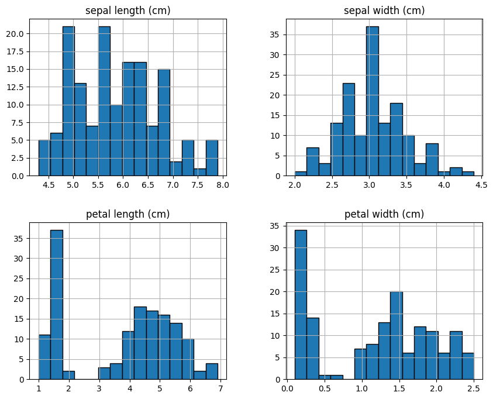

Describe Data Dataset Iris#
Pada bagian ini dilakukan analisis statistik deskriptif untuk memahami karakteristik numerik dari dataset Iris. Statistik deskriptif membantu melihat nilai rata-rata, minimum, maksimum, serta penyebaran data.
import pandas as pd
from sklearn.datasets import load_iris
iris = load_iris()
data = pd.DataFrame(iris.data, columns=iris.feature_names)
data['species'] = iris.target
data.head()
| sepal length (cm) | sepal width (cm) | petal length (cm) | petal width (cm) | species | |
|---|---|---|---|---|---|
| 0 | 5.1 | 3.5 | 1.4 | 0.2 | 0 |
| 1 | 4.9 | 3.0 | 1.4 | 0.2 | 0 |
| 2 | 4.7 | 3.2 | 1.3 | 0.2 | 0 |
| 3 | 4.6 | 3.1 | 1.5 | 0.2 | 0 |
| 4 | 5.0 | 3.6 | 1.4 | 0.2 | 0 |
Statistik Deskriptif#
Berikut adalah hasil statistik deskriptif dari dataset Iris:
import pandas as pd
from sklearn.datasets import load_iris
from scipy import stats
# Load dataset Iris
iris = load_iris()
data = pd.DataFrame(iris.data, columns=iris.feature_names)
# List untuk menyimpan ringkasan
summary_list = []
for col in iris.feature_names:
mean = round(data[col].mean(), 2)
median = round(data[col].median(), 2)
mode = stats.mode(data[col], keepdims=True).mode[0]
std = round(data[col].std(), 2)
min_val = data[col].min()
max_val = data[col].max()
var = round(data[col].var(), 2)
summary_list.append({
'Feature': col,
'Mean': mean,
'Median': median,
'Mode': mode,
'Std': std,
'Min': min_val,
'Max': max_val,
'Variance': var
})
# Ubah list menjadi DataFrame
summary = pd.DataFrame(summary_list)
summary
| Feature | Mean | Median | Mode | Std | Min | Max | Variance | |
|---|---|---|---|---|---|---|---|---|
| 0 | sepal length (cm) | 5.84 | 5.80 | 5.0 | 0.83 | 4.3 | 7.9 | 0.69 |
| 1 | sepal width (cm) | 3.06 | 3.00 | 3.0 | 0.44 | 2.0 | 4.4 | 0.19 |
| 2 | petal length (cm) | 3.76 | 4.35 | 1.4 | 1.77 | 1.0 | 6.9 | 3.12 |
| 3 | petal width (cm) | 1.20 | 1.30 | 0.2 | 0.76 | 0.1 | 2.5 | 0.58 |
Penjelasan:#
Mean menunjukkan rata-rata dari setiap variabel.
Min dan Max menunjukkan nilai terkecil dan terbesar.
Std (Standar Deviasi) menunjukkan tingkat penyebaran data.
Variabel petal length dan petal width memiliki variasi yang cukup besar dibandingkan sepal width.
Dari hasil ini dapat disimpulkan bahwa setiap variabel memiliki rentang nilai yang berbeda dan dapat digunakan untuk membedakan spesies bunga.
Pemeriksaan Missing Value#
Hasil menunjukkan bahwa tidak terdapat data yang kosong (missing value) pada dataset Iris, sehingga data siap untuk analisis lanjutan.
data.drop(columns='species', errors='ignore').hist(figsize=(10,8), bins=15, edgecolor='black')
plt.suptitle('Distribusi Variabel Iris', fontsize=16)
plt.show()
---------------------------------------------------------------------------
NameError Traceback (most recent call last)
Cell In[3], line 2
1 data.drop(columns='species', errors='ignore').hist(figsize=(10,8), bins=15, edgecolor='black')
----> 2 plt.suptitle('Distribusi Variabel Iris', fontsize=16)
3 plt.show()
NameError: name 'plt' is not defined
